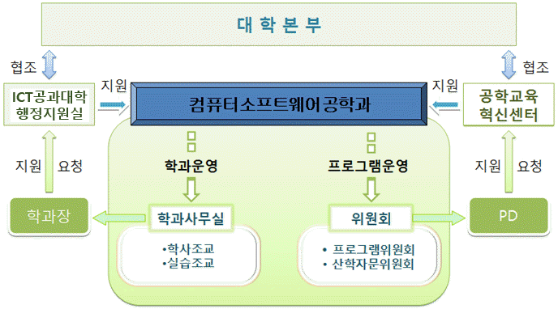

| {#inc_top} |
| {#inc_sub_img} |
|
| {#inc_sm} |
| |
|
|
| |
|
|  |
| |
|
| |
| 위원회 명 |
주요 업무 |
| 프로그램 위원회 |
ㆍ공학인증 프로그램 운영 및 주요 의결사항 결정
ㆍ학교본부와 공학인증협력센터와의 의견조율
ㆍ인증기준별 CQI에 따른 프로그램 개선
ㆍ학생 상담 및 관찰 시스템 체계적인 운영
ㆍ교육목표 수립 및 개선, 학습성과 설정 및 개선
ㆍ교과과정 편성과 개선, 교과목 CQI 검토 및 분석
ㆍ설계 교과목 운영 및 개선, 교육환경 구축 및 개선
ㆍ재학생 학업성취도 조사 및 분석, 재학생 강의평가 분석
ㆍ재학생 상담 및 관찰 결과 분석, 학습성과 달성여부 평가
ㆍ재학생, 졸업생, 산업체 고용주 설문조사 실시 |
| 산학자문 위원회 |
ㆍ학과 발전 계획 수립, 산업체 동향 분석
ㆍ재학생과 졸업생 취업 지도, 취업률 조사 및 분석
ㆍ인턴쉽 프로그램, 산업체 전문가 멘토제 운영
ㆍ교육목표, 학습성과, 교과과정에 대한 산업체 인사 자문 분석 |
|
| |
|
|
| |
1) 프로그램위원회 운영세칙
제1조(목적) 컴퓨터소프트웨어공학과의 교육품질을 향상시키고 한국공학교육인증원의 인증기준에 부합하는 프로그램의 운영과 개선에 관한 사항을 논의 또는 의결하기 위해 프로그램위원회(이하 위원회)를 둔다.
제2조(기능) 위원회는 제1조의 목적을 달성하기 위해 다음 사항을 심의 의결한다.
1. 프로그램의 운영에 대한 사항
2. 프로그램의 교육목표 설정에 관한 사항
3. 프로그램 교육목표 달성 및 평가에 관한 사항
4. 프로그램의 학습 성과 설정에 관한 사항
5. 프로그램 학습 성과 달성 및 평가에 관한 사항
6. 프로그램의 교육과정 편성, 운영, 개편에 관한 사항
7. 프로그램의 교육품질 향상을 위한 학생, 교수, 교육시설 및 재원, 교육환경의 개선에 관한 사항
8. 프로그램 자체보고서 작성에 관한 사항
9. 기타 프로그램과 관련한 사항
제3조(구성) 위원회는 컴퓨터소프트웨어공학과 교수로 구성되고, 위원장은 학과장을 원칙으로 하며, 위원장은 간사를 임명하여 운영할 수 있다.
제4조(회의) 회의는 학기 말에 소집하며, 필요에 따라 위원장이 수시로 소집할 수 있다.
제5조(보칙) 이 규정에 정하지 않은 사항은 프로그램위원회의 결정에 따른다.
부 칙
1. 이 내규는 2006년 11월 1일부터 시행한다.
2. 이 변경 내규는 2007년 3월 1일부터 시행한다.
2) 산학자문위원회 운영세칙
제1조(목적) 컴퓨터소프트웨어공학 프로그램에 대한 산업체의 의견을 수렴하고 반영하며, 프로그램의 교육목표, 학습 성과 및 교과과정의 적정성을 자문하며, 산학교류에 관한 사항을 담당하는 것을 목적으로 산학자문위원회(이하 위원회)를 둔다.
제2조(기능) 제1조의 목적을 달성하기 위하여 다음 사항을 수행한다.
1. 프로그램의 교육목표 및 학습 성과가 산업체 요구에 부합하는지 검토하고 자문한다.
2. 프로그램의 교과과정을 통해 교육목표 및 학습 성과가 적절하게 달성되고 있는지 검토하고 자문한다.
3. 종합설계에 대한 평가를 통해 산업체가 요구하는 설계 교육이 이루어지고 있는지 검토하고 자문한다.
제3조(구성) 위원회는 다음과 같이 구성한다.
1. 위원회의 위원은 프로그램 교수 2인 이상과 산업체 인사 4인 이상으로 구성한다.
2. 위원장과 위원은 프로그램위원회를 통해 프로그램 위원장이 임명한다.
3. 산업체 위원은 교수들의 추천으로 프로그램위원회를 통해 프로그램 위원장이 임명한다.
제4조(회의) 위원회는 1회/년 소집하며, 필요에 따라 위원장이 수시로 소집할 수 있다.
제5조(보칙) 이 규정에 정하지 않은 사항은 프로그램위원회의 결정에 따른다.
부 칙
1. 이 내규는 2006년 11월 1일부터 시행한다.
2. 이 변경 내규는 2007년 3월 1일부터 시행한다.
3. 이 변경 내규는 2014년 3월 1일부터 시행한다.
|
|
|
| |
|
|
| |
|
|
|
|
|
|